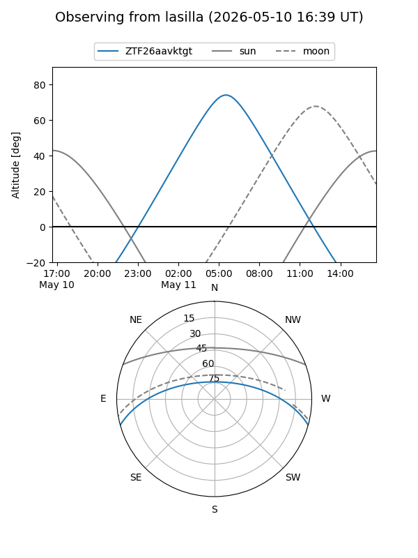
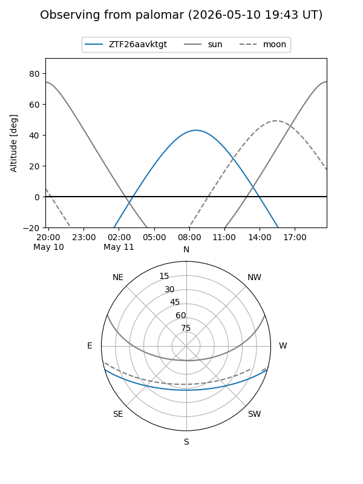

ZTF26aavktgt
Target ZTF26aavktgt at 2026-05-11 12:08
Aliases and brokers:
FINK: link
Lasair: link
ALeRCE: link
alt names
ZTF26aavktgt (ztf,fink_ztf)
Coordinates:
equatorial (ra, dec) = 240.6927,-13.41144
equatorial (HMS+DMS) = 16:02:46.25,-13:24:41.17
galactic (l, b) = (357.9672,+28.38451)
Flags:
Photometry:
last ztfg=16.49
2 ztfg detections
Lightcurve
Visibility


Additional plots